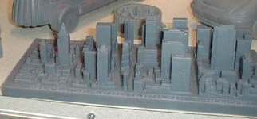

| Reports >
Mfg. Tech. > Towards Perfection In Manufacturing: Autofabrication Technologies: |
|
|
|
| Home | Previous Page
| Next Page |
Applications > Architecture:
Çok yaygýn olmasa da
autofabrication teknolojileriyle mimari maketler ve topografik
modeller inþa edilmektedir:
|
Topograhic map modeling:
Soldaki iki topografik
model, Helisys/LOM
cihazlarý ile kaðýt katmanlardan inþa edilmiþlerdir.
Saðda görülen, abartýlmýþ orantýda bir yükseltiye
sahip dünya küresi modeli deniz seviyesinde 193mm çapa
sahiptir (daha fazla bilgi için: www.npaci.edu/enVision/v15.1/tmf.html).
Solda,
Afit
firmasýnýn deneme aþamasýndaki cihazý tarafýndan inþa
edilmiþ Kuzey Japon Alplerine ait 1/400000 ölçekli bir
topografik model görülmektedir. Saðdaki
renki kabartma harita ise Z
Corp. firmasýnýn cihazlarýyla inþa edilmiþtir.
|
Steel
structures and city building modeling
Solda,
SLA
250 ile 25 parçadan imal edilmiþ bir radyo teleskopu
modeli görülmektedir. Saðdaki resimde ise Japonya'dan
Afit
firmasýnýn yeni (2002) geliþtirmekte olduðu autofabrication
cihazý tarafýndan inþa edilmiþ bir þehir merkezi modeli
görülmektedir.

Yukarýdaki
þehir maketi ise 3D Systems / ThermoJet
ile inþa edilmiþtir:
A
model fabricated via SLS Technology:
 Saðdaki
resimde SLS teknolojisi ile nylon malzemeden inþa edilmiþ
Belçika'nýn Leuven þehrindeki 552 yýllýk tarihi City-Hall
binasýna ait 1/150 ölçekli bir model görülmektedir. Bu
çalýþma Leuven Üniversitesi (K.U. Leuven) Mimarlýk Bölümünün
ayný üniversitenin makine müh. bölümü ile yaptýðý iþbirliði
sonucunda DTM
SinterStation 2000 sistemiyle Duraform (Nylon) tozundan
0.1mm katman kalýnlýklarýyla 4 partide toplam 100 saatte
inþa edilmiþtir. Tasarýmý mimarlýk bölümünde AutoCAD R14
ile yapýlan ve 244 x 100 x 349 mm ölçülerindeki bu model
7 parça halinde inþa edilmiþ ve sonradan montajý yapýlmýþtýr.
Konuyla ilgili daha fazla bilgiye aþaðýdaki adreste bulunan
makaleden ulaþýlabilir: Saðdaki
resimde SLS teknolojisi ile nylon malzemeden inþa edilmiþ
Belçika'nýn Leuven þehrindeki 552 yýllýk tarihi City-Hall
binasýna ait 1/150 ölçekli bir model görülmektedir. Bu
çalýþma Leuven Üniversitesi (K.U. Leuven) Mimarlýk Bölümünün
ayný üniversitenin makine müh. bölümü ile yaptýðý iþbirliði
sonucunda DTM
SinterStation 2000 sistemiyle Duraform (Nylon) tozundan
0.1mm katman kalýnlýklarýyla 4 partide toplam 100 saatte
inþa edilmiþtir. Tasarýmý mimarlýk bölümünde AutoCAD R14
ile yapýlan ve 244 x 100 x 349 mm ölçülerindeki bu model
7 parça halinde inþa edilmiþ ve sonradan montajý yapýlmýþtýr.
Konuyla ilgili daha fazla bilgiye aþaðýdaki adreste bulunan
makaleden ulaþýlabilir:
http://www.art-of-design.com/eurorp/trophees/trophee2000_model.htm |
Complex
wall and roof models designed by Arup Partnership:
Yapý
sektöründe Dünya'nýn önde gelen mühendislik danýþmanlýk
firmalarýndan Arup Partnership'in Londra merkezindeki
"yapý mühendislik tasarým grubu", tasarlanan
kompleks yapýlarýn modellerini üretmek için Ocak 2000'de
ThermoJet
cihazýný kullanmaya baþlamýþtýr.
Yukarýda,
2004 yýlýnda bitirilmesi planlanan Hollanda'daki bir yolcu
terminalinde (Arnhem Central) uygulanacak olan yaklaþýk
30m'den yüksek, burkulmuþ bir beton duvarýn 3D CAD ekran
görüntüsü ile ThermoJet (mum) modeli gözükmektedir.
Arup,
çok karmaþýk geometriye sahip orijinal yapýlarýn tasarýmý
ve inþasý konusunda Dünya'da iyi bir üne sahiptir. Aþaðýda,
SLA
cihazlarýyla üretilmiþ Arup tasarýmý karmaþýk bir çatý
modeli görülmektedir:
Not:
1946 yýlýnda kurulmuþ olan Arup, dünya çapýnda 70 ofise
ve 5000'den fazla çalýþana sahiptir.
|
Çelik
konstrüksiyon yapý maketleri:
Aþaðýda görülen maketler 3D Systems'in Kasým 2003'de piyasaya
sürdüðü InVision
ile inþa edilmiþtir:
|
|
Models fabricated via Z
Corp. 3DP technology:
Saðdaki model Z 810 modeliyle inþa edilmiþtir. Aþaðýdaki
modeller ise ABD'ndeki Laser
Graphic Manufacturing (LGM) firmasý tarafýnan
yapýlmýþtýr. LGM, bu teknolojileri kullanarak karmaþýk
modelleri 1 hafta içinde müþterilerine teslim edebilmektedir.
Modeller direkt renkli inþa edilebildiði gibi genellikle
sonradan boyanmaktadýr. |
|
|
|
| Yukarýdaki
model 1:48 ölçekle imal edilmiþ ve 3D CAD veri hazýrlýðý
ve autofabrication dahil toplam 3 günde tamamlanmýþtýr.
Saðdaki 1:75 ölçekli model 25x15cm ebadýndadýr.
Resimleri daha büyük görmek için üzerlerini klikleyiniz. |
|
|
| Home | Previous Page
| Next Page | |
|
 |
|
TurkCADCAM.net > Türkiye'nin yeni ürün tasarım, geliştirme, CAD/CAM/CAE, CNC, kalıp ve imalat teknolojileri portalı |
*****
Sektörün profesyonel bilgi ve işbirliği platformu ***** |
|
|
|
|
|
|